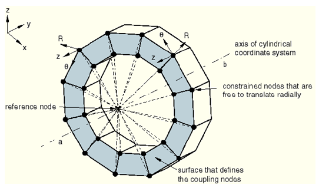

Abaqus中的几种接触
Abaqus 中的三种常用约束：tie coupling MPC，下面是一些简单的介绍。
1. Tie
在刚度数据传递上相当于两个面刚性连接，绑定区域不发生相对运动和变形，刚度较大；在约束形式上tie约束为面对面的约束，主要是用于点（一个或多个，但不能是RP）和面以及面与面之间的绑定约束，用悬臂梁算模态的方法，测试RP和面之间用tie绑定完全没效果。
2. Coupling
可以理解为对接触问题的一种简化方式。Coupling可用于建立参考点（只测试过RP点）和关注对象之间（耦合点）的约束，关注对象和参考点之间有相同的刚体运动，可以在参考点上施加约束载荷。在约束形式上coupling为点对面的一中约束。其中，coupling分为两种：运动耦合和分布耦合。
-
运动耦合 运动耦合：即在此区域的各节点与参考点之间建立一种运动上的约束关系。 Kinematic：约束耦合点与参考点之间的刚体运动，可有选择性的约束6个自由度，6个自由度全选择的时候相当于MPC中的Beam约束。通常是一个点和多个点之间的耦合约束
-
分布耦合 分布耦合：在此区域的各节点与参考点之间建立一种约束关系，但是对此区域上各节点的运动进行了加权处理，使在此区域上受到的合力和合力距与施加在参考点上的力和力矩相等效。换言之，分布耦合允许面上的各部分之间发生相对变形，比运动耦合中的面更柔软。
- D-coupling D-coupling：着重于强调耦合间的力和力矩的传递，而对于位移的耦合不是刚性的。
一般来讲，分布耦合处的刚度小于运动耦合处的刚度
其中，Coupling的类型又分为三种： 001. 002. Contimuum distributing（木用过~待补充） 003. D-coupling：着重于强调耦合间的力和力矩的传递，而对于位移的耦合不是刚性的。 
3. MPC
MPC：MPC功能最强大，选项也最多。这里的选择总会让人感觉到困惑···MPC下面有很多子类，相对而言选择性强些，对于点对点的约束很直观，如果能结合一些网格划分工具中的功能，是很容易定义多个点和另外多个点之间的对应MPC关系的。对于大位移、大变形问题时，使用MPC其精度更高、约束更为“柔性”，与实际工程问题教接近，也就是说对于几何非线性问题的处理上MPC更为靠谱。